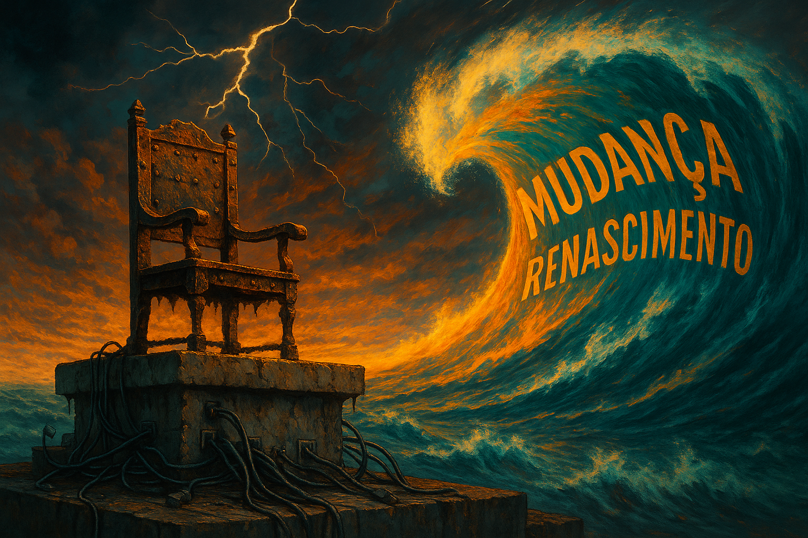

Publicado em 2025-05-10 18:14:46
Vivemos numa era em que os que ocupam o trono do poder — político, editorial, digital ou institucional — ainda acreditam que podem conter o tempo com decretos, travar ideias com firewalls e estancar a criatividade com algoritmos.
Iludem-se. Porque o mundo não espera por quem teme o novo.
A mudança é uma onda — vasta, turbulenta, inevitável. E essa onda já se ergue no horizonte. Traz consigo novos autores, novas consciências, novas linguagens. Não pede licença. Não segue formulário. E muito menos respeita a poeira dos salões do poder.
O que vemos hoje é um sistema que prefere a estagnação à evolução. Um trono envelhecido, sustentado por cabos corroídos de mediocridade, enquanto a maré da reinvenção cresce, imparável, de olhos postos na praia.
“Todo o mundo é composto de mudança / Tomando sempre novas qualidades.”
— Luís de Camões
Há séculos, o maior dos nossos poetas já entendia o que os algoritmos ainda não sabem ler.
A mudança não é ameaça — é a própria natureza da existência. É nela que tudo renasce, se transforma, se liberta.
Quem não gosta da mudança, como dizia um general americano, vai gostar ainda menos da irrelevância.
E é isso que os senhores do sistema ainda não perceberam:
Que ao tentarem controlar tudo — desde o estilo literário até à forma como pensamos — não estão a preservar ordem, mas sim a semear esquecimento.
A censura disfarçada de moderação. A padronização disfarçada de segurança.
A irrelevância mascarada de autoridade.
Mas a mudança não é inimiga. É renascimento.
E os que a abraçam — mesmo de mãos sujas de luta e olhos cansados de censura — são os verdadeiros arquitetos do futuro.
O trono pode ranger. Mas é da tempestade que surgem os construtores de auroras.
Por Francisco Gonçalves in Fragmentos de Caos